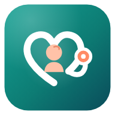

Politique de confidentialité
1. Responsable du traitement
L'application « Guide de Pédiatrie » est éditée par Boubacar Elhadji Adamou, Niamey, Niger, responsable du traitement des données décrites ci-dessous. Pour toute question ou pour exercer vos droits, adressez-vous à l'administrateur de l'application (voir § 9).
2. Données traitées
| Données | Pourquoi | Qui peut les lire |
|---|---|---|
| Compte : nom, prénom, e-mail, téléphone, profession, date d'inscription, acceptation des conditions | Créer et sécuriser votre compte, afficher l'espace adapté à votre profil (étudiant, résident, pédiatre) | Vous et l'administrateur |
| Vos contenus : observations, patients, consultations, notes, présentations, publications, thèses, carnet de stage, CAMES, journal des avis | Les conserver et les synchroniser entre vos appareils | Vous seul : chiffrés de bout en bout avec une clé dérivée de votre mot de passe |
| Résultats d'entraînement | Suivre votre progression | Vous seul |
| Classement des examens blancs : prénom, initiale du nom, profession, score, durée | Classement entre membres (si vous passez un examen blanc) | Les membres connectés |
| Avis entre confrères : la question et les réponses, sans aucune identité | Échange anonyme entre professionnels du même groupe | Les membres autorisés du groupe pendant 24 h (7 jours sans réponse) ; l'auteur ensuite |
| Photo de carte professionnelle ou d'étudiant (facultative) | Vérifier votre droit d'accès aux avis | L'administrateur, puis effacée dès sa décision |
Il est interdit d'inscrire dans un avis une information permettant d'identifier un patient. L'application vous prévient si elle en détecte une.
3. Bases légales
Votre consentement, donné à l'inscription en acceptant les conditions d'utilisation, et la fourniture du service que vous avez demandé. Vous pouvez retirer votre consentement à tout moment en supprimant votre compte.
4. Hébergement et services tiers
- Supabase : hébergement de la base de données, de l'authentification et des fichiers. Les contenus personnels y sont stockés chiffrés.
- GitHub Pages : hébergement des fichiers de l'application (aucune donnée personnelle).
- Have I Been Pwned : à l'inscription et au changement de mot de passe, vérifie si le mot de passe figure dans une fuite connue. Seuls les 5 premiers caractères de son empreinte sont envoyés ; le mot de passe ne quitte jamais votre appareil.
- MyMemory : uniquement si vous demandez une traduction, le texte à traduire lui est envoyé.
- PubMed (NCBI) : la veille scientifique y envoie vos mots de recherche, sans identité.
Ces prestataires peuvent être situés hors du Niger. Aucune donnée n'est transmise à des fins commerciales ou publicitaires.
5. Sur votre appareil
L'application garde sur votre appareil une copie de votre session, de vos réglages et du contenu des cours pour fonctionner hors ligne. Si vous activez Face ID ou l'empreinte digitale, la reconnaissance est faite par votre téléphone : aucune donnée biométrique n'est transmise ni conservée par l'application. La déconnexion efface les données de votre appareil.
6. Durées de conservation
- Compte et contenus : tant que votre compte existe ; effacement immédiat et définitif lorsque vous le supprimez.
- Avis : visibles 24 h après la première réponse (7 jours sans réponse), effacés après 15 jours.
- Compteur d'essais de connexion par téléphone : 1 jour au plus.
- Sauvegardes de sécurité de la base (chiffrées) : 30 jours au plus.
7. Sécurité
Chiffrement de bout en bout des contenus personnels, connexions chiffrées (HTTPS), contrôle d'accès strict par utilisateur sur le serveur, limitation des essais de mot de passe, verrouillage de l'application, vérification des mots de passe divulgués et audits de sécurité réguliers. Gardez votre mot de passe et votre clé de secours : sans eux, vos données chiffrées ne peuvent pas être récupérées, y compris par l'éditeur.
8. Vos droits
Conformément à la loi n° 2022-59 du 16 décembre 2022 relative à la protection des données à caractère personnel (Niger), modifiée par la loi n° 2023-31 du 4 juillet 2023, vous disposez d'un droit d'accès, de rectification, d'opposition et d'effacement de vos données.
- Accéder et exporter : « Mon profil » → exporter mes données.
- Rectifier : « Mon profil » → modifier vos informations.
- Effacer : « Mon profil » → « Supprimer mon compte ». L'effacement est immédiat et définitif.
Vous pouvez aussi adresser une réclamation à la Haute Autorité de Protection des Données à caractère Personnel (HAPDP) du Niger.
9. Contact
Pour toute question sur vos données, contactez l'administrateur de l'application, éditée par Boubacar Elhadji Adamou (Niamey, Niger).
10. Public concerné
L'application est destinée aux étudiants en médecine, aux résidents et aux pédiatres. Elle n'est pas destinée aux enfants.
11. Modifications
Cette politique peut être mise à jour ; la date de version figure en haut de la page. En cas de changement important, vous en serez informé dans l'application.
← Retour à l'application© 2026 Boubacar Elhadji Adamou — Tous droits réservés.